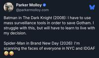

0
Apple's practice of mixing employees' work files with personal iCloud accounts reportedly left some former staff with continued access to confidential documents, messages, and even new updates after leaving the company. "The former employees said many Apple files they had been shared on over their careers at the company -- including planning documents for product launch events -- continued to sync to their personal devices through the iCloud storage service after they left Apple," reports The Information. "In some cases, they even received notifications about fresh updates to the documents. Some former employees said they were petrified to delete the files for fear that doing so would attract Apple's attention." MacRumors reports: Apple files get mixed in with employees' accounts because the company encourages them to use their personal Apple Accounts with their work iCloud account. Employees are given a 2TB iCloud plan and are able to merge the storage with their existing Apple Account or create a new account. Since only one primary account can be signed in at a time, most opt to use their existing account to avoid having to carry two iPhones. Apple has a managed folder for workplace files that it revokes access to when an employee leaves, but some internal documents aren't saved there automatically and shared files end up mixed in with personal content. Employees can also retain access to iMessage chats and files shared via the Messages app.
Lingering access to Apple systems is central to Apple's lawsuit against OpenAI. In its filing, Apple alleged that former employee Chang Liu breached Apple's systems using a "rare, previously unknown authentication bug" to download files while he was working at OpenAI. Apple told The Information that the OpenAI lawsuit is unrelated to any files left available on iCloud and that it does not pursue legal claims against former employees who accidentally have Apple documents in their personal iCloud accounts. "This case is about OpenAI employees wrongfully taking Apple's secret and confidential information regarding our unreleased technologies, processes, and products. Nothing in the filing relates to documents shared by, or stored in, iCloud."
Read more of this story at Slashdot.
Reddit CEO Steve Huffman criticized Google's AI Overviews for summarizing publishers' content without delivering the traffic benefits of traditional search, arguing that users increasingly value Reddit's human perspectives and firsthand experiences. Ars Technica reports: First, there was a letter to investors (PDF), wherein Huffman spun his narrative about Reddit's value proposition and general strategic direction amid the proliferation of AI tools. He wrote: "As the internet becomes flooded with synthetic content, people are craving real human perspective. We are the antidote to an automated web. AI compresses the internet into summaries. Reddit delivers the opposite: deep discussions, passionate debates, and lived experiences. People don't want a summary of Reddit; they want Reddit."
The letter also said: "As AI makes information more abundant, the challenge is no longer finding content -- it's finding context, personal opinion, and first-hand accounts. Everything online feels flat, polished, generated, or sponsored, so consumers are overwhelmed and increasingly skeptical. We've never had more information, but we've never trusted it less."
And then, in comments around the earnings report, he added: "What we see is, 10 blue links has driven tremendous value and growth to the broader ecosystem... from where we sit, AI Overviews has yet to make a similar level of positive impact, and I think that's consistent across the broader landscape, right? As businesses, publishers, retailers, we're still looking for that win-win." Reddit shares nevertheless fell more than 20 percent as investors worried that unstable Google referrals could undermine its growth, even after a strong earnings report.
Read more of this story at Slashdot.
South Korea recorded its highest temperature since modern observations began in 1904, with the city of Yangsan reaching 42.5C as temperatures exceeded 40C for a fifth consecutive day. Authorities warned residents to "immediately stop all outdoor activities." The Guardian reports: More than 20 localities in South Korea were under emergency heatwave alerts on Sunday -- a new warning category introduced this year to better address rising temperatures. An emergency alert is issued when areas experiencing a heatwave are forecast to hit perceived temperatures of 38C or an actual temperature of 39C for the day. Issuing a heat warning, the weather agency urged people to "immediately stop all outdoor activities," adding that "indoor spaces without air conditioning are dangerous."
"Move immediately to a cool place, such as a designated cooling centre or a shaded area, and stay hydrated while resting," it advised. Fearing for those people most vulnerable to heat, the prime minister, Han Seong-sook, ordered local officials to strengthen safety checks on residents and to ensure a stable power and water supply was maintained. [...] Korea Meteorological Administration (KMA) data show the average annual number of heatwave days in the country has more than doubled to 19 in the past five years.
Read more of this story at Slashdot.
An anonymous reader quotes a report from 404 Media: Following 404 Media's reporting that book database company ISBNdb claimed to source printed books to then sell to AI companies for AI training, the company deleted the part of its website offering the service and walked back claims that it would train AI models, and instead called it "a test of market interest."
On July 30, nine days after 404 Media's reporting, ISBNdb added a note to its homepage and an update on its news page about the change. "We've seen the recent coverage about a marketing landing page on our site, and we understand the concern it raised. The facts: ISBNdb has never purchased, scanned, or sold a book -- for AI training or anything else," ISBNdb wrote. "We don't train AI models, and we never have. The page was a test of market interest; no such service was ever brought to life. We've taken the page down. Our job is helping people find books. For more than two decades, ISBNdb has been the card catalog of the book world -- the data behind how bookstores, libraries, and reading apps connect readers with titles. Data about books, not the books themselves. That hasn't changed."
ISBNdb removed the landing page for "Printed Books Sourcing for Your AI LLMs Dataset Needs" on July 28. "It was part of exploring demand, and we've chosen to pivot away from that direction. Our main ISBNdb (book metadata API) services are unaffected and running as usual," the site says. According to 404 Media's previous report, ISBNdb had pitched pre-2022 printed books as premium AI training material because they contained curated human knowledge without contamination from AI-generated text or modern data-poisoning techniques. "The world's best AI training data is sitting on a shelf," the company had argued, while offering discreet bulk book acquisition under NDAs and acknowledging the potential backlash if AI firms were seen destroying millions of books for scanning.
Read more of this story at Slashdot.
"AI's decimation of call center jobs has begun," reports Bloomberg:
Companies including the Commonwealth Bank of Australia, Microsoft Corp., Uber Technologies Inc. and Hyatt Hotels Corp. are using automated chat and phone systems to handle work that previously required humans. In some cases, they've already wiped out sizable chunks of their customer service operations, together representing thousands of workers.
The specter of automation has long loomed over the call center industry, which employs millions worldwide from the U,S, to India to the Philippines. But until recently, generative artificial intelligence wasn't good enough to move the needle. Now, AI advancements — and pressure on executives to show they're embracing the new technology — have prompted corporations to deploy the tools more widely. Customer service employment in the U.S. is declining and will likely continue to do so as more tasks are automated, Forrester analyst Kate Leggett wrote in a report earlier this year. While it's impossible to determine the future job losses, she estimated that almost half of customer service roles will be affected by 2030.
Globally, the steepest job cuts are expected to hit countries like the Philippines, where many Western companies have outsourced their most easily automated work. Salespeople at multiple tech companies told Bloomberg that they routinely pitch call center AI tools as a way of lowering labor costs, undercutting a common industry claim that AI is primarily a way to help workers become more productive rather than kill their jobs... Commonwealth Bank of Australia, the nation's largest lender, has shed hundreds of workers from its chat support line as it wove AI into the system, according to people familiar with the work. This amounted to tens of millions of dollars in savings per year, one of the people said...
Microsoft is both one of the largest vendors and adopters of customer service automation tools. This has helped the software giant trim its customer service workforce — a mix of contractors and full-time staff — from about 50,000 to 40,000 in recent years, according to a person familiar with the operations. "If something happened with little Johnny's Xbox in the middle of the night, we can now solve that with AI," Judson Althoff, who runs Microsoft's sales and service operations, said in an interview. Althoff said in April that AI is saving the company about $750 million per year in customer service costs. More complex problems still require human support, but the company is constantly expanding what can be fixed automatically, he said in the interview.
Two examples from the article:
Last year Hyatt fired 30% of its in-house customer support staff for the Americas, according the hotel-industry news site Hotel Dive.
Last week Bloomberg reported Uber had cut 10% of its customer service jobs as part of effort to "embrace artificial intelligence," according to the article. "Today, Uber pushes users to submit support requests through their apps, where they're met with an AI chatbot."
Read more of this story at Slashdot.
Slashdot reader prisoninmate shares this report from 9to5Linux:
Coming ten days after the previous Linux kernel security update, which only fixed 12 vulnerabilities that may lead to a privilege escalation, denial of service, or information leaks, the new Debian 13 Linux kernel security update is a massive one, and it patches no less than 68 security vulnerabilities in the Linux 6.12 LTS kernel.
Debian 13 "Trixie" kernel security update are CVE-2026-64530, a use-after-free in the traffic-control subsystem leading to remote denial-of-service with potential for remote code execution, and CVE-2026-64531 (a.k.a. OVSwrap), a local-root vulnerability in the Open vSwitch datapath leading to local privilege escalation to root...
All Debian 13 "Trixie" users are urged to update their installations to Linux kernel 6.12.100-1 as soon as possible.
Read more of this story at Slashdot.
Long-time Slashdot reader pyroclast shared this report from Linux Journal:
After years of requests from the Linux gaming community, GOG has officially confirmed that it is developing native Linux support for the GOG Galaxy launcher. The announcement marks one of the biggest shifts in the company's history and signals a stronger commitment to Linux as a first-class gaming platform. While GOG has offered DRM-free Linux game downloads since 2014, its Galaxy launcher has remained exclusive to Windows and macOS — until now. Although the company has not announced a release date, GOG says Linux has become a major area of investment, with development already underway...
Unlike the web-based game downloads that Linux users already have access to, GOG Galaxy serves as a full-featured game management application. The launcher currently offers features including:
— Automatic game installation and updates
— Cloud save synchronization
— Achievement tracking
— Playtime statistics
— Game library organization
— Integrated storefront browsing
— Friends lists and social features
— Cross-platform launcher integration
Today, Linux users typically access these capabilities through community projects such as Heroic Games Launcher, Lutris, or Bottles. A native Galaxy client would provide an officially supported alternative with direct integration into GOG's ecosystem...
For GOG, supporting Linux more fully aligns with its philosophy of giving users greater control over their purchased games.
The article argues this news shows Linux growing in importance for game publishers. After the rapid adoption of Valve's Steam Deck, there's also been continuous improvements to Proton and Vulkan, increasing hardware compatibility, and native Linux game development efforts.
"As more companies recognize the platform's growth, Linux users can expect broader support from game publishers and software developers alike."
Read more of this story at Slashdot.
To design invisible drones, researchers have tried camouflage, transparent materials and light-bending optical systems. But engineers at Northwestern University used "motion blur," which an announcement from the school notes is the effect that makes fast-spinning fans seem to disappear.
"The drone spins up to 25 times per second, which is too fast for the human eye to see clearly. While it isn't completely invisible, it morphs into a ghostly smudge that seamlessly blends into the background... "
To design the drone, the Northwestern team first used a computational model to generate roughly 20,000 drone configurations capable of stable flight. Then, they used artificial intelligence (AI) and optimization algorithms to repeatedly rearrange the drones' major components, including a motor, propeller, circuit board, counterweight and batteries. After sifting through many different configurations, the algorithms determined the ideal placement of the drone's components to minimize its visibility from virtually every viewing angle while allowing for stable flight.
After selecting promising candidates, the engineers simulated each drone spinning in flight and overlaid those images a hundred real-world backgrounds. Then, they used a perception model that approximates human vision to determine how noticeable each design appeared. Designs that blended into their surroundings received lower visibility scores. The team selected the 500 lowest-scoring designs and applied the optimization algorithm, which repeatedly adjusted the positions of components to further minimize those scores. "The design process was fully automated," [said Northwestern's associate CS professor Michael Rubenstein, who led the work]. "Then, when we were confident that a drone met all our criteria, we built it."
They've named the drone "Phantom Twist"," and plan to design future iterations with more transparent materials or quieter propulsion to make it even less noticeable.
The Northwestern team presented the work on July 16 at Robotics: Science and Systems 2026 in Sydney, Australia...
Thanks to long-time Slashdot reader fahrbot-bot for sharing the news.
Read more of this story at Slashdot.
The Register looks at exactly why "It is practically impossible to move any non-trivial Word document out of MS Office to a non-MS suite and back again without it being more trouble than it's worth."
OOXML, developed by Microsoft and first standardized by Ecma in 2006, became the ISO/IEC 29500 standard in 2008 after a grueling and adversarial process. Microsoft pursued standardization because it has always been a standards-led organization dedicated to maximizing the options for its customers. Or because it had to at gunpoint, while vowing silently to follow the letter of the law but stymie its intent. You decide... The Document Foundation (TDF) which spends its days worrying about such things, reports that Microsoft has effectively broken the standard by sticking with a transitional version as its default rather than the cleaner Strict variant. The result is that what Microsoft software renders is what Microsoft wants to render, despite nominal compliance...
What we need is a test suite that can take any OOXML engine and test its compliance against what Microsoft is actually doing. That means the tooling wrapped around the spec has to account for proprietary dependencies that get smuggled in, such as fonts. It also means actively and continuously tracking the ground truth of Microsoft's evolving products and services. It doesn't need to be perfect, but it absolutely needs to be good enough. Compliant engines have to become good enough for a critical mass of users to coalesce around them.
In an earlier article The Document Foundation reminded all software users that they have a choice. "When an institution sends a letter formatted with a proprietary font, embedded in a proprietary format, produced by proprietary software, it is not communicating information but perpetuating a dependency."
"Digital sovereignty begins with the recognition that this is a choice: the file format is a choice, the font on the page is a choice, and the software is a choice."
Read more of this story at Slashdot.
theodp writes: During Microsoft's 2026Q4 earnings call, CEO Microsoft Satya Nadella took time to tout a dashboard he personally created using AI from a Morgan Stanley analyst's PDF research report, which suggested a rosy payback for the so-called MAG7's ('Magnificent 7' companies) massive capital expenditures on AI (to which Nadella later added a "not financial advice" disclaimer). "It would be fun for you, Adam. I think one of your colleagues put out an ROIC [Return on Invested Capital] document. I took that document to Copilot, which is a PDF, and I said, 'Build me a new Power BI dashboard, essentially.' But here is the thing. It built a rich semantic model that went into my Fabric with OneLake that brought all the data in from the external sources. In fact, it was current with all the SEC filings of all the MAG7. And then on top of that, the repo itself is in GitHub, but the artifact is sitting in my Copilot as a site. That, to me, is a classic example of an enterprise-wide workflow. I, as a knowledge worker, could go create a dashboard. The data engineer can go to Fabric and find the artifact. The professional developer can go to the repo and find it in GitHub. And by the way, it's all registered with Agent 365. That's a little bit of what Amy is describing as the coming together of a new way to work, even while at the same time, bringing IT, security and manageability of it."
After Nadella's show-and-tell drew an underwhelming response during the call ("That's very helpful. Thank you." said the Morgan Stanley analyst whose team's work Nadella scraped with AI), Nadella turned to social media with posts on LinkedIn (12M followers) and Twitter/X (8M followers) to make the case for why his DIY project was such a brilliant demonstration of how AI enables governance, controls, security, development, testing, deployment, maintenance, data analysis/modeling, visualization, usability, and value. "Some more detail on the ROIC Intelligence App I built yesterday and mentioned on today's earnings call," Nadella wrote on LinkedIn. "I took the PDF that Brian Nowak at Morgan Stanley put together for Hyperscale ROIC this week and used Copilot code (coming in our new superapp) with a single prompt + skill (/drill-me) to create the plan, then used autopilot in auto to create the full app (with history, lookups, scenarios, what-ifs, etc). And /rubber-duck to test. And the best part is that all the artifacts are in my enterprise environment. My app is in Copilot, my code is in GitHub Enterprise; all my data pipelines/lake/semantic models are in Fabric. And everything is under Agent 365 IT/Sec/FinOps control! So this is not about Tokenmaxxing or vibe coding. Every step of the way the rails are engineered to create value, making everything a long-term reusable asset, with governance/security, and cost controls. This is the full system to drive business value. Disclosures: This is all pulled from public sources, and for illustrative purposes only...not financial advice! :) Here is the app and architecture..."
Not unexpectedly, the accompanying screenshot of a splash page for the BI app and a buzzword-laden complicated architecture diagram drew universal praise from LinkedIn fans, but also a few barbs from less-than-impressed commenters on Nadella's Twitter/X post, some of whom suggested Nadella's project might even represent a jump-the-shark moment for AI mania. "That he doesn't see whats wrong with saying 'My app is in Copilot, my code is in GitHub Enterprise; all my data pipelines/lake/semantic models are in Fabric' is exactly why MS is failing at AI,'" replied @PassingPixels on X/Twitter. "Dude is having to run 5 different systems to emulate babies first vibe code." @zigmund_ignatov added, "Why do we call glorified slide show an app?" @Mathupiriyan quipped, "Looks like Copilot just turned a PDF into a profit crystal ball." Unimpressed, @Markusndnb remarked, "So you created a web page using tons of proprietary MS tools." And @FishyAccounting called on Nadella to show-his-work, saying "Post the prompt or it didn't happen." (btw, Microsoft President Brad Smith similarly declined to provide the prompt for his own self-described amazing AI DIY reporting project that he touted at Microsoft's Shareholder Meeting last December).
So, does Nadella's self-promoted AI reworking of someone else's PDF research report strike you as an amazing example of everything that's good about AI, or does it conjure up memories of The Emperor's New Clothes?
Read more of this story at Slashdot.
An anonymous reader quotes a report from TechCrunch: Several popular Samsung smart TV apps contain code that share the owner's internet connection with strangers, potentially putting millions of Samsung smart TVs at risk of hijacking, according to new security research published on Monday. Some of these apps claim to have been installed on hundreds of millions of smart TVs in people's homes, per the app developers. At least one of the smart TV apps was a simple Pac-Man game that Samsung had endorsed and prominently featured in its "Editor's Choice" section on customers' TV screens. These apps contain software that funnels outsiders' web traffic through ordinary home and office internet connections, known as residential proxy networks (or "resproxies"), which are increasingly being linked to cybercrime. When opened, apps with resproxy code can turn the smart TV into an always-on tunnel for outsiders to funnel their web traffic through, known as an exit node -- even when the app is no longer open.
The security research by Norwegian cybersecurity company Mnemonic describes a perfect storm of problems that allows low-quality apps to proliferate across Samsung's app store, containing code that puts users at risk of having their internet connections tapped by a rogue app. Many of these apps are bare-bone shells, made from only a few lines of code, and are designed solely to load content from another website, such as a game. While such smart TV apps load content from another server, any review of these apps sees only the few lines of code within, and not necessarily the content itself. "What was reviewed is not necessarily what is running," wrote Harrison Sand, an offensive security consultant at Mnemonic.
After TechCrunch contacted Samsung with a request for comment about the research, the electronics giant said in an emailed statement that it was banning apps that share their users' internet connections, and will remove apps that contain the functionality. "We have already restricted new app registrations that incorporate such proxy functionalities on our Smart TV platform," said a Samsung spokesperson. "We are currently implementing strict platform-wide developer policies explicitly banning residential proxy SDKs, and we are working to identify and remove all apps currently available in our store that contain these components." LG also recently announced plans to suspend apps containing ResProxy software after a security firm found that roughly 42% of apps in its TV app store allowed unknown third parties to route internet traffic through users' televisions without their knowledge.
Read more of this story at Slashdot.
Even as Hollywood performers protest and Hollywood studios sue "in their war on AI," reports the Los Angeles Times, "the entertainment industry is deepening its dependence on it."
Among hundreds of job postings in late June, more than one in 10 was likely connected to AI. The top studios' public postings suggest they have been recruiting people to build AI tools. They are also recruiting teams to defend their intellectual property against unauthorized AI use. "There are plenty of studios that are hiring [for AI] but never talk about it in public," said Yoland Yan, a co-founder of ComfyUI, a company that helps studios juggle different AI tools. Companies have been hesitant to detail how they use generative AI in film production — partly because they are concerned about consumer and union backlash. Some in Hollywood described AI use as the new cosmetic surgery, where everyone knows it is happening, but few will admit to it...
Although some companies may be shy about sharing their AI plans, big stars who don't have to answer to others have been more open about their embrace of the new technology for storytelling. Rejecting AI is like picking a horse and buggy over a car, said "Star Wars" creator George Lucas. "Artificial intelligence means it's much easier for us to make movies," he told a trade magazine earlier this year. "There's nothing you can do about it. That's progress. It's the future." Some in Hollywood have a softer stance on artificial intelligence, with studios cutting deals with AI companies, and filmmakers like Martin Scorsese backing AI companies. Ben Affleck launched an AI film tech company then sold it to Netflix for half a billion dollars. When launching InterPositive, Affleck said he wanted to keep "storytelling human" by building AI tools that could fix lighting, generate missing shots and other things while "keeping creative decisions in the hands of artists...."
Disney, Netflix and Amazon had job postings that were about using AI on the creative side of the business. Universal, Paramount, Warner Bros. and Sony had job ads suggesting they were also using AI but for marketing, distribution and audience analytics. The postings suggest the Disney, Netflix and Amazon studios are building repeatable AI workflows for visual effects, animation, sound and dubbing. The companies also seem to be building in-house teams to develop custom generative-AI models, while also using third-party software.
None of the jobs advertised were to create AI that wrote scripts or created AI actors.
Ironically, the Times used Claude Code to build a scraper to identify the job postings, their article acknowledges.
Three Disney jobs were for "content security," assessing AI tools and guarding against piracy, watermarking and rights-protection work. But Disney is also hiring PhD-level talent "to study 'computer graphics and AI' for Pixar and Disney films," according to the article, and "people to 'bridge the gap between research and practical studio application.'"
Disney-owned visual effects shops Industrial Light & Magic "was searching for supervisors to 'explore emerging technologies (including AI/Machine Learning)' to develop new production workflows."
Audio post-production unit Skywalker Sound "seemed to be recruiting to build proprietary AI models for soundtracks, voice separation, and voice transfer, the process of taking a speaker's tone and pitch, and applying it to new content."
Amazon "was hiring a principal AI executive to drive AI-tool adoption across production, plus roles in operations automation and LLM content classification."
Read more of this story at Slashdot.
A woman found her police officer ex-boyfriend had used Flock's camera system 600 times to look up the location of her and her daughter, reports the Washington Post (Alternate URL here). (She found out through Have I Been Flocked, described as "a website that aggregates police search logs made available through public records.")
But it turns out dozens more police officers have also misused Flock...
Authorities have charged or accused at least 50 law-enforcement officers of using license-plate readers for unauthorized purposes, including to stalk women without their knowledge or consent, a Post analysis of police and court records found. In 26 of these cases, police investigators and prosecutors said the officers used the technology to spy on their wives, their girlfriends, their exes, their exes' new partners or women they wanted to meet. In other cases, police or prosecutors have not specified the alleged surveillance targets. Flock's system was used in 46 of the cases analyzed by The Post, while the other cases involved competing products...
After The Post relayed its findings to Flock, the company said in a statement it "will soon be announcing better filters and tools to stop abuse before it happens...." In April, the company rolled out a new voluntary "audit assistance" feature, which agencies can choose to enable, that automatically scans officers' searches for suspicious activity, such as queries repeatedly targeting the same vehicle or run by officers off the clock. In an interview with The Post, Flock chief executive Garrett Langley said misuse of its systems is inevitable and that the company is focused on providing tools to catch perpetrators after the fact... "We're not going to change humans, and humans make bad decisions," Langley said. "What we can do is make sure that they know if you use this tool, you will be held accountable...."
Through automated license-plate reader systems, or ALPRs, officers could trace the rhythms and travels of their subjects' daily lives, leading in some instances to violent confrontations, moments of psychological manipulation, and threats of coercion and control, the analysis found.
- In Wisconsin, a police officer allegedly used Flock to check whether his ex-girlfriend had gone to an abortion clinic, according to a police affidavit for a case set for trial this month.
- In Kansas, a police chief who tracked his ex through Flock sneaked up on her while she was intimate with another man, a state police certification body alleged, leading to his firing.
- In Florida, a deputy speeding to stop a young actress he'd added to a watch list for a license-plate tool called Guardian nearly caused a head-on crash, according to a police report and video from his dashboard camera. The deputy was arrested in March, and his attorney declined to comment.
- And in California, prosecutors said a former deputy, Alexander Vanny, used Flock as part of a months-long campaign of "stalking" and "humiliating" his former fiancée that also involved following her around town and installing a hidden camera in her roommate's bathroom, according to a sentencing brief...
While some of the searches resulted in officers' firings, prosecutions and prison sentences, police departments in other cases allowed officers to continue using the systems even after receiving warnings that they were being misused... An array of privacy advocates has argued that Flock could deter bad actors by making simple changes to its product, such as requiring officers to label every search with a criminal case number. Some policing experts also warned that agencies' inconsistencies in developing and enforcing standard procedures for license-plate readers could lead to further misconduct. With no federal laws governing use and only a patchwork of state laws, many of the country's roughly 18,000 police agencies are left to decide their rules on their own...
Langley, Flock's chief, has dismissed pushes by activists for the company to further limit how officers use its product.
"No one elected me the police chief of America," he told Forbes last year, adding, "I don't think it's our job to police the police."
The Post also got this quote from an officer was fired and sentenced to probation after pleading no contest to charges of computer-system misuse, stalking and battery. "Pretty much everybody uses that computer system" improperly in the department, he said, and "they don't audit it [nearly] as much as they should."
Flock told The Post it now has over 120,000 cameras in more than 6,000 communities, recording 20 billion license plate scans every month.
Read more of this story at Slashdot.
Valve just published the Steam Survey results for July 2026, reports Phoronix, "and they point to a small uptick in Linux gaming use."
Back in March Steam on Linux hit a record high of 5.33%, dropped to 4.52% in April, landed at 3.99% in May, and then in June was at 3.69%. The just-published numbers for July put Steam on Linux use at 4.01%, as an improvement over the prior two months but still well off the percentage highs of March and April...
The July data puts SteamOS Holo as powering around 22% of Steam on Linux gaming systems. That's also with the Steam Machine now shipping, in addition to the Steam Deck.
Read more of this story at Slashdot.
Researchers found enterprises are spending time troubleshooting cloud connectivity due to increased AI workloads, reports Computer Weekly. More than 400 IT and infrastructure decision-makers (US and UK) were surveyed for internet/cloud/AI exchange operator DE-CIX by market researchers Censuswide. But despite 96% of respondents claiming their enterprise networks are ready for cloud/AI loads, the average IT team still spends more than 11 hours each week resolving cloud connectivity problems:
Other leading concerns included downtime or reliability issues (26%), latency or slow performance (28%), and security vulnerabilities/DDoS attacks (27%). Cost of connectivity, staff expertise and lack of visibility/control over data flows were also cited as major challenges... As a result, as indicated in the study, many businesses are now turning to private interconnection, which enables enterprises to connect directly to cloud providers over dedicated infrastructure rather than routing traffic across the public Internet. Designed to deliver lower latency, greater resilience, enhanced security and more predictable performance, private interconnection has become an increasingly important way of supporting modern cloud and AI workloads. Specifically, the data showed that 61% of companies are already using private connectivity to clouds, while another 31% are actively considering it... [And 71% of enterprises with 1000 or more employees]
Only 8.62% of the smaller companies were spending 21 to 40 hours per week dealing with connectivity issues, while just 2.53% of the largest companies in the sample do. Summing up these findings, DE-CIX said that together they suggest direct interconnection is rapidly becoming a core component of enterprise cloud and AI infrastructure and a competitive advantage for companies, though optimising interconnection strategies clearly remains a pressing challenge for small and medium-sized enterprises... "Every AI application depends on data moving quickly, securely and predictably between users, clouds and AI infrastructure. Our research suggests that far too many enterprises are still spending valuable time trying to maintain that kind of connectivity, with more than a third spending between 11 and 20 hours per week, and just under one in 10 spending between 21 to 40 hours per week. This confirms what we already knew — that that network architecture can make or break AI adoption."
Elsewhere The Register reports that cloud infrastructure services "grew at their fastest for eight years during the second quarter of 2026, thanks to the AI craze and continued demand for flexible and scalable IT infrastructure."
According to the latest figures from Synergy Research, enterprise spending on cloud infrastructure passed $143 billion in Q2, a year-on-year growth rate of 43 percent. This followed 11 successive quarters of increasing growth rates, during which the market has now doubled in size... "AI has, of course, driven most of that incremental growth, and we now see year-on-year growth rates of 165 percent for AI-specific cloud services...." And the top three global players continue to dominate the market, with Amazon Web Services (AWS), Microsoft Azure and Google Cloud together accounting for 67 percent of all the cloud revenue during the quarter. That percentage has increased since the third quarter of last year, when the triumvirate made up 63 percent of enterprise cloud infra spending.
Read more of this story at Slashdot.
Samantha Subin / CNBC : Palantir reports Q2 revenue up 93% YoY to $1.94B, vs. $1.8B est., US commercial revenue up 149%, and raises FY 2026 revenue guidance; PLTR jumps 9%+ after hours — Palantir topped second-quarter earnings on Monday and more than doubled commercial revenue growth from a year ago.
Zack Whittaker / TechCrunch : Samsung says it's restricting app registrations and removing apps with SDKs that can turn smart TVs into residential proxy exit nodes, after a similar ban by LG — Several popular Samsung smart TV apps contain code that share the owner's internet connection with strangers …
Devlin Barrett / New York Times : Court docs: an FBI agent has been charged with amassing ~$1M worth of cryptocurrency, largely by making unauthorized withdrawals from a criminal target overseas — The agent confessed to making unauthorized withdrawals from a criminal target overseas, according to court papers.
Michael Kan / PCMag : US satellite internet provider Hughesnet files for Chapter 11 after losing subscribers to Starlink and plans to focus on business and government customers — US satellite internet provider Hughesnet has filed for Chapter 11 bankruptcy after running low on cash and losing subscribers to Starlink.
The Verge : Leaked doc: Microsoft plans to bring Xbox 360 games to PC, and the games will be able to run on its next-gen Project Helix console, “Xbox PCs”, and handhelds — The disc to digital program seems like it's close to launching, too.
Maria Curi / Axios : The White House says it has met its deadline to establish a voluntary framework for evaluating advanced AI models; it did not provide details of the framework — The White House said on Monday it met its deadline to establish a voluntary framework for evaluating advanced AI models …
Eduardo Baptista / Reuters : China revises its regulations to tighten protection of chip layout designs, including punitive damages for serious infringement, taking effect from October 15 — China has revised regulations protecting integrated-circuit layout designs, tightening registration standards and allowing punitive damages …
Bloomberg : Valar, which is making small modular nuclear reactors to power data centers, raised a $1B Series B led by Sequoia at a $6B post-money valuation — Sequoia Capital led a $1 billion funding round for Valar Atomics Inc. that the nuclear startup says will help it shift from demonstrating small reactors to producing them in volume.
Allie Garfinkle / Fortune : Mariana Minerals, which builds and operates mines using its MarianaOS software platform, raised a $310M Series B, bringing its total funding to $400M — The last century was fueled by oil and gas. Turner Caldwell is betting the next century runs on metals.
Reuters : India proposes extending tax exemptions until 2041 for foreign companies that provide machinery to contract manufacturers, changes that Apple had lobbied for — India has proposed extending tax exemptions until 2041 for foreign companies that provide machinery to contract manufacturers …
The Information : Sources: the Trump administration invites staffers from OpenAI, Google, Anthropic, and others to the White House on Tuesday to review the AI oversight framework — The Trump administration has invited staffers from major tech companies including OpenAI, Google and Anthropic to the White House …
Tim Bradshaw / Financial Times : UK court filing: in July, Apple launched a new legal challenge against the UK government's attempt to create a “backdoor” to access encrypted customer data — iPhone maker files complaint over latest government demand to allow access to encrypted user data
Meir Orbach / CTech : Zenity, which develops a platform for securing AI agents, raised a $125M Series C led by Norwest Venture Partners, taking its total funding to ~$185M — Israeli cybersecurity company reaches $185 million in total funding as enterprises race to secure autonomous AI agents.
Katherine Hamilton / Wall Street Journal : Visa plans to acquire Israeli company BioCatch, which uses AI to detect fraud and distinguish legitimate users from attackers in real time, for $2.4B in cash — BioCatch uses artificial intelligence to detect fraud and distinguish legitimate users from attackers
Kate Park / TechCrunch : Horizon3, whose AI penetration testing platform NodeZero helps find and exploit attack paths in production systems, raised a $250M Series E at a $2B valuation — Cybersecurity startup Horizon3 has raised a $250 million Series E at a $2 billion valuation, more than tripling its valuation in 14 months.